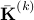

Hilbert-Schmidt Independence Criterion Lasso (HSIC Lasso)
Introduction
The goal of supervised feature selection is to find a subset of input features that are responsible for predicting output values. The least absolute shrinkage and selection operator (Lasso) allows computationally efficient feature selection based on linear dependency between input features and output values. In this project, we consider a feature-wise kernelized Lasso for capturing non-linear input-output dependency. We first show that, with particular choices of kernel functions, non-redundant features with strong statistical dependence on output values can be found in terms of kernel-based independence measures. We then show that the globally optimal solution can be efficiently computed; this makes the approach scalable to high-dimensional problems.
Main Idea
The HSIC Lasso is given as the following form
where is the Frobenius norm,  is the centered Gram matrix computed from  -th feature, and is the centered Gram matrix computed from output
-th feature, and is the centered Gram matrix computed from output  .
.
To compute the solutions of HSIC Lasso, we use the dual augmented Lagrangian (DAL) package.
Features
Can select nonlinearly related features.
Highly scalable w.r.t. the number of features.
Convex optimization.
Download
Usage
Download the source code.
For the less memory implementation, you need to download eigen and place it to the same folder of HSICLasso. Then, compile cpp files with mex.
Run the script (demo_HSICLasso.m).
Acknowledgement
I am grateful to Prof. Masashi Sugiyama and Dr. Leonid Sigal for their support in developing this software.
Contact
I am happy to have any kind of feedbacks. E-mail:
Reference
Yamada, M., Jitkrittum, W., Sigal, L., Xing, E. P. & Sugiyama, M.
High-Dimensional Feature Selection by Feature-Wise Non-Linear Lasso.
Neural Computation, vol.26, no.1, pp.185-207, 2014. [paper] [software]Yamada, M., Kimura, A., Naya, F., & Sawada, H.
Change-Point Detection with Feature Selection in High-dimensional Time-Series Data.
In Proceedings of International Joint Conference on Artificial Intelligence (IJCAI 2013), pp. 1827-1833.